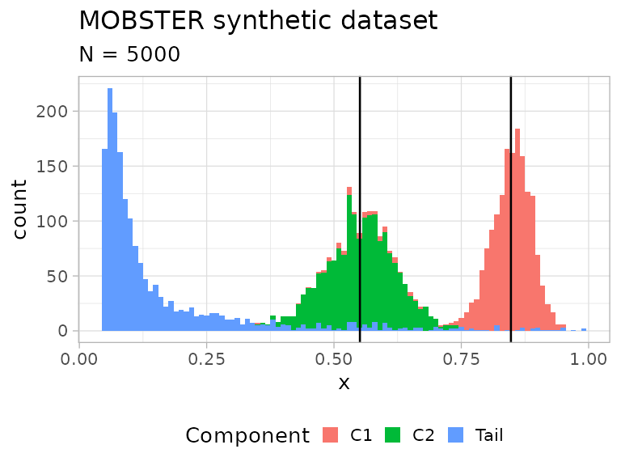
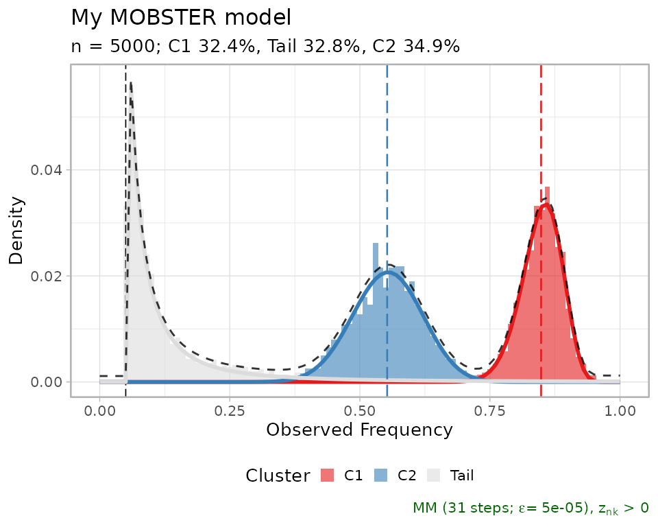
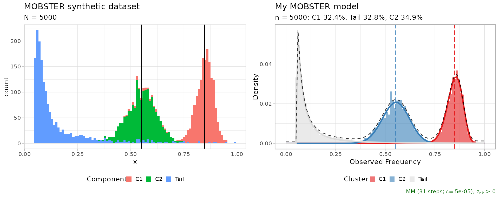

1. Introduction
Giulio Caravagna
21 November, 2025
Source:vignettes/a1_introduction.Rmd
a1_introduction.RmdInput data for mobster
You can run a MOBSTER analysis if, for a set of input mutations (SNVs, indels etc.), you have available VAF or CCF data. The input data can be loaded using different input formats.
For VAF values you can use:
- a
data.frame(or,tibble) with a column namedVAFwhose values are numerical , withoutNAentries and columns named any of those:cluster,Tail,C1,C2,C3,…; - a VCF file that must contain at least a column with the total depth
of sequencing and the number of reads with the variants. In this case
you need first to use function
load_VCFand load the VCF content, and then proceed using your data as adata.frame.
For CCF values you can only use the a data.frame format.
Importantly, you have to store the CCF values in a column again named
VAF, which must follow the same convention of a VAF column
(i.e., range of values). Since CCF values usually peak at around
1.0 for clonal mutations (i.e., present in 100% of the
input cells), we suggest to adjust standard CCF estimates dividing them
by 0.5 in order to reflect the peak of an heterozygous
clonal mutation at 50% VAF for a 100% pure bulk sample.
Example dataset. Diploid mutations from sample
LU4 of the Comprehensive Omics Archive of Lung
Adenocarcinoma are available in the package under the name
LU4_lung_sample. The available object is the results of an
analysis with mobster, and the input mutation data is
stored inside the object.
# Example dataset LU4_lung_sample, downloaded from http://genome.kaist.ac.kr/
print(mobster::LU4_lung_sample$best$data)
#> # A tibble: 1,282 × 12
#> Key Callers t_alt_count t_ref_count Variant_Classification DP VAF
#> <int> <chr> <int> <int> <chr> <int> <dbl>
#> 1 370 mutect,str… 30 95 intergenic 125 0.24
#> 2 371 mutect,str… 10 105 intergenic 115 0.0870
#> 3 372 mutect,str… 40 108 intronic 148 0.270
#> 4 373 mutect,str… 20 101 intronic 121 0.165
#> 5 374 mutect,str… 39 89 intergenic 128 0.305
#> 6 375 mutect,str… 41 120 intronic 161 0.255
#> 7 376 mutect,str… 43 93 intronic 136 0.316
#> 8 377 mutect,str… 22 95 intergenic 117 0.188
#> 9 378 mutect 7 104 intergenic 111 0.0631
#> 10 379 mutect,str… 35 93 intergenic 128 0.273
#> # ℹ 1,272 more rows
#> # ℹ 5 more variables: chr <chr>, from <chr>, ref <chr>, alt <chr>,
#> # cluster <chr>Other datasets are available through the data
command.
Driver annotations
In the context of subclonal deconvolution we are often interested in
linking “driver” events to clonal expansions. Since mobster
works with somatic mutations data, it is possible to annotate the status
of “driver mutation” in the input data; doing so, the drivers will be
reported in some visualisations of the tool, but will not influence any
of the computation carried out in mobster.
The annotate one or more driver mutations you need to include in your column 2 extra columns:
-
is_driver, a booleanTRUE/FALSEflag; -
driver_label, a character string that will be used as label in any visualisation that uses drivers.
Generating random models and data
You can sample a random dataset with the random_dataset
function, setting:
- the number of mutations (
n) and Beta components (k, subclones) to generate; - ranges and constraints on the size of the components;
- ranges for the mean and variance of the Beta components.
The variance of the Betas is defined as
where
,
and
is the input parameter Beta_variance_scaling. Roughly,
values of Beta_variance_scaling on the order of
1000 give low variance and sharp peaked data distributions.
Values on the order of 100 give much wider
distributions.
dataset = random_dataset(
seed = 123456789,
Beta_variance_scaling = 100 # variance ~ U[0, 1]/Beta_variance_scaling
)A list with 3 components is returned, which contains the actual data, sampled parameters of the generative model, and a plot of the data.
In mobster we provide the implementation of the model’s
density function (ddbpmm, density Dirichlet Beta Pareto
mixture model), and a sampler (rdbpmm) which is used
internally by random_dataset to generate the data.
# Data, in the MOBSTER input format with a "VAF" column.
print(dataset$data)
#> # A tibble: 5,000 × 2
#> VAF simulated_cluster
#> <dbl> <chr>
#> 1 0.856 C1
#> 2 0.853 C1
#> 3 0.844 C1
#> 4 0.827 C1
#> 5 0.855 C1
#> 6 0.854 C1
#> 7 0.878 C1
#> 8 0.865 C1
#> 9 0.845 C1
#> 10 0.874 C1
#> # ℹ 4,990 more rows
# The generated model contains the parameters of the Beta components (a and b),
# the shape and scale of the tail, and the mixing proportion.
print(dataset$model)
#> $a
#> C1 C2
#> 72.6286 30.5932
#>
#> $b
#> C1 C2
#> 13.07363 24.93900
#>
#> $shape
#> [1] 1
#>
#> $scale
#> [1] 0.05
#>
#> $pi
#> Tail C1 C2
#> 0.3431634 0.3331162 0.3237204
# A plot object (ggplot) is available where each data-point is coloured by
# its generative mixture component. The vertical lines annontate the means of
# the sampled Beta distributions.
print(dataset$plot)
Fitting a dataset
Function mobster_fit fits a MOBSTER model.
The function implements a model-selection routine that by default
scores models by their reICL (reduced Integrative
Classification Likelihood) score, a variant to the popular
BIC that uses the entropy of the latent variables of the
mixture. reICL is discussed in the main paper.
This function has several parameters to customize the fitting
procedure, and a set of special pre-parametrised runs that can be
activated with parameter auto_setup. Here we use
auto_setup = "FAST", an automatic setup for a fast run; its
parameters are accessible through an internal package function.
# Hidden function (:::)
mobster:::template_parameters_fast_setup()
#> $K
#> [1] 1 2
#>
#> $samples
#> [1] 2
#>
#> $init
#> [1] "random"
#>
#> $tail
#> [1] TRUE FALSE
#>
#> $epsilon
#> [1] 1e-06
#>
#> $maxIter
#> [1] 100
#>
#> $fit.type
#> [1] "MM"
#>
#> $seed
#> [1] 12345
#>
#> $model.selection
#> [1] "reICL"
#>
#> $trace
#> [1] FALSE
#>
#> $parallel
#> [1] FALSE
#>
#> $pi_cutoff
#> [1] 0.02
#>
#> $N_cutoff
#> [1] 10Compared to these, default parameters test more extensive types of
fits (i.e., more clones, longer fits, higher number of replicates etc.).
We usually use the fast parametrisation to obtain a first fit of the
data and, if not satisfied, we run customised calls of
mobster_fit.
# Fast run with auto_setup = "FAST"
fit = mobster_fit(
dataset$data,
auto_setup = "FAST"
)
#> [ MOBSTER fit ]
#>
#> ✔ Loaded input data, n = 5000.
#> ❯ n = 5000. Mixture with k = 1,2 Beta(s). Pareto tail: TRUE and FALSE. Output
#> clusters with π > 0.02 and n > 10.
#> ! mobster automatic setup FAST for the analysis.
#> ❯ Scoring (without parallel) 2 x 2 x 2 = 8 models by reICL.
#> ℹ MOBSTER fits completed in 8.6s.
#> ── [ MOBSTER ] My MOBSTER model n = 5000 with k = 2 Beta(s) and a tail ─────────
#> ● Clusters: π = 35% [C2], 33% [Tail], and 32% [C1], with π > 0.
#> ● Tail [n = 1567, 33%] with alpha = 1.3.
#> ● Beta C1 [n = 1636, 32%] with mean = 0.85.
#> ● Beta C2 [n = 1797, 35%] with mean = 0.55.
#> ℹ Score(s): NLL = -2558.66; ICL = -4657.61 (-5009.64), H = 383.05 (31.02). Fit
#> converged by MM in 31 steps.A call of mobster_fit will return a list with 3
elements:
- the best fit
fit$best, according to the selected scoring method; -
fit$runs, a list with the ranked fits;bestmatches the head of this list; -
fit$fits.table, a table that summarises the scores for each one of the runs.
Each fit object (best or any object stored in
runs) is from the S3 class dbpmm.
# Print the best model
print(fit$best)
#> ── [ MOBSTER ] My MOBSTER model n = 5000 with k = 2 Beta(s) and a tail ─────────
#> ● Clusters: π = 35% [C2], 33% [Tail], and 32% [C1], with π > 0.
#> ● Tail [n = 1567, 33%] with alpha = 1.3.
#> ● Beta C1 [n = 1636, 32%] with mean = 0.85.
#> ● Beta C2 [n = 1797, 35%] with mean = 0.55.
#> ℹ Score(s): NLL = -2558.66; ICL = -4657.61 (-5009.64), H = 383.05 (31.02). Fit
#> converged by MM in 31 steps.
# Print top-3 models
print(fit$runs[[1]])
#> ── [ MOBSTER ] My MOBSTER model n = 5000 with k = 2 Beta(s) and a tail ─────────
#> ● Clusters: π = 35% [C2], 33% [Tail], and 32% [C1], with π > 0.
#> ● Tail [n = 1567, 33%] with alpha = 1.3.
#> ● Beta C1 [n = 1636, 32%] with mean = 0.85.
#> ● Beta C2 [n = 1797, 35%] with mean = 0.55.
#> ℹ Score(s): NLL = -2558.66; ICL = -4657.61 (-5009.64), H = 383.05 (31.02). Fit
#> converged by MM in 31 steps.
print(fit$runs[[2]])
#> ── [ MOBSTER ] My MOBSTER model n = 5000 with k = 1 Beta(s) and a tail ─────────
#> ● Clusters: π = 71% [C1] and 29% [Tail], with π > 0.
#> ● Tail [n = 1429, 29%] with alpha = 1.5.
#> ● Beta C1 [n = 3571, 71%] with mean = 0.68.
#> ℹ Score(s): NLL = -1446.64; ICL = -2379.16 (-2842.18), H = 463.02 (0). Fit
#> converged by MM in 23 steps.
print(fit$runs[[3]])
#> ── [ MOBSTER ] My MOBSTER model n = 5000 with k = 1 Beta(s) and a tail ─────────
#> ● Clusters: π = 71% [C1] and 29% [Tail], with π > 0.
#> ● Tail [n = 1429, 29%] with alpha = 1.5.
#> ● Beta C1 [n = 3571, 71%] with mean = 0.68.
#> ℹ Score(s): NLL = -1446.64; ICL = -2379.16 (-2842.18), H = 463.01 (0). Fit
#> converged by MM in 28 steps.Usually, one keeps working with the best model fit. From
that it is possible to extract the results of the fit, and the
clustering assignments. The output is a copy of the input data, with a
column reporting the model’s latent variables (LVs) and the
cluster assignment (hard clustering).
# All assignments
Clusters(fit$best)
#> # A tibble: 5,000 × 6
#> VAF simulated_cluster cluster Tail C1 C2
#> <dbl> <chr> <chr> <dbl> <dbl> <dbl>
#> 1 0.856 C1 C1 0.00371 0.996 0.000000547
#> 2 0.853 C1 C1 0.00375 0.996 0.000000759
#> 3 0.844 C1 C1 0.00403 0.996 0.00000242
#> 4 0.827 C1 C1 0.00520 0.995 0.0000187
#> 5 0.855 C1 C1 0.00371 0.996 0.000000571
#> 6 0.854 C1 C1 0.00373 0.996 0.000000684
#> 7 0.878 C1 C1 0.00415 0.996 0.0000000246
#> 8 0.865 C1 C1 0.00370 0.996 0.000000171
#> 9 0.845 C1 C1 0.00398 0.996 0.00000208
#> 10 0.874 C1 C1 0.00392 0.996 0.0000000480
#> # ℹ 4,990 more rows
# Assignments with LVs probability above 85%
Clusters(fit$best, cutoff_assignment = 0.85)
#> # A tibble: 5,000 × 6
#> VAF simulated_cluster cluster Tail C1 C2
#> <dbl> <chr> <chr> <dbl> <dbl> <dbl>
#> 1 0.856 C1 C1 0.00371 0.996 0.000000547
#> 2 0.853 C1 C1 0.00375 0.996 0.000000759
#> 3 0.844 C1 C1 0.00403 0.996 0.00000242
#> 4 0.827 C1 C1 0.00520 0.995 0.0000187
#> 5 0.855 C1 C1 0.00371 0.996 0.000000571
#> 6 0.854 C1 C1 0.00373 0.996 0.000000684
#> 7 0.878 C1 C1 0.00415 0.996 0.0000000246
#> 8 0.865 C1 C1 0.00370 0.996 0.000000171
#> 9 0.845 C1 C1 0.00398 0.996 0.00000208
#> 10 0.874 C1 C1 0.00392 0.996 0.0000000480
#> # ℹ 4,990 more rowsThe second call imposes a cut to the assignments with less than 85% probability mass in the LVs.
If you want to assign some new data to the fit model you can use
function Clusters_denovo.
Basic plots of a fit
Clusters can be plot as an histogram with the model density (total
and per mixture). By default, mobster names Beta clusters
C1, C2, etc. according to the decreasing order
of their mean; so C1 is always the cluster with highest
Beta mean, etc. If the data are diploid mutations, C1
should represent clonal mutations.
# Plot the best model
plot(fit$best)
#> Warning: Using `size` aesthetic for lines was deprecated in ggplot2 3.4.0.
#> ℹ Please use `linewidth` instead.
#> ℹ The deprecated feature was likely used in the mobster package.
#> Please report the issue at <https://github.com/caravagnalab/mobster/issues>.
#> This warning is displayed once every 8 hours.
#> Call `lifecycle::last_lifecycle_warnings()` to see where this warning was
#> generated.
#> Warning: The `<scale>` argument of `guides()` cannot be `FALSE`. Use "none" instead as
#> of ggplot2 3.3.4.
#> ℹ The deprecated feature was likely used in the mobster package.
#> Please report the issue at <https://github.com/caravagnalab/mobster/issues>.
#> This warning is displayed once every 8 hours.
#> Call `lifecycle::last_lifecycle_warnings()` to see where this warning was
#> generated.
#> Warning: The dot-dot notation (`..count..`) was deprecated in ggplot2 3.4.0.
#> ℹ Please use `after_stat(count)` instead.
#> ℹ The deprecated feature was likely used in the mobster package.
#> Please report the issue at <https://github.com/caravagnalab/mobster/issues>.
#> This warning is displayed once every 8 hours.
#> Call `lifecycle::last_lifecycle_warnings()` to see where this warning was
#> generated.
A comparative plot between the fit and data is assembled using cowplot.
